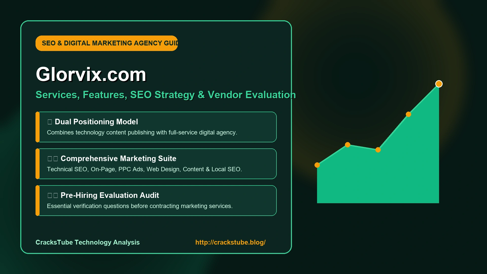
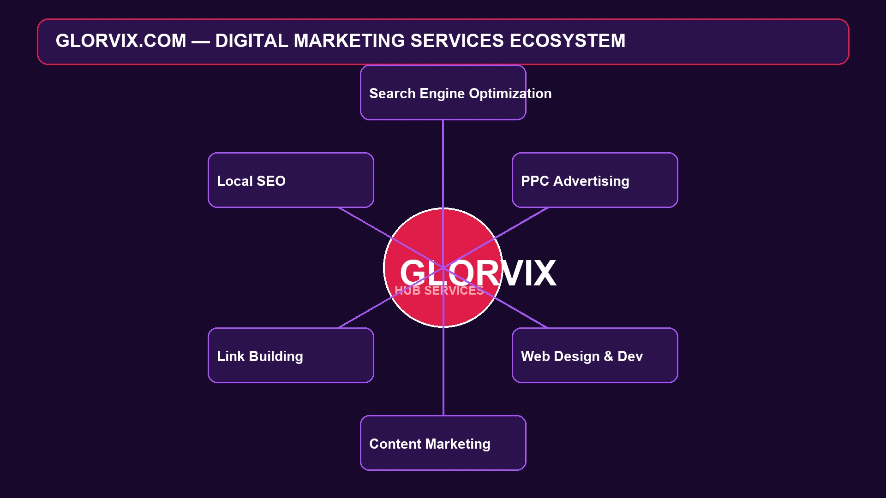
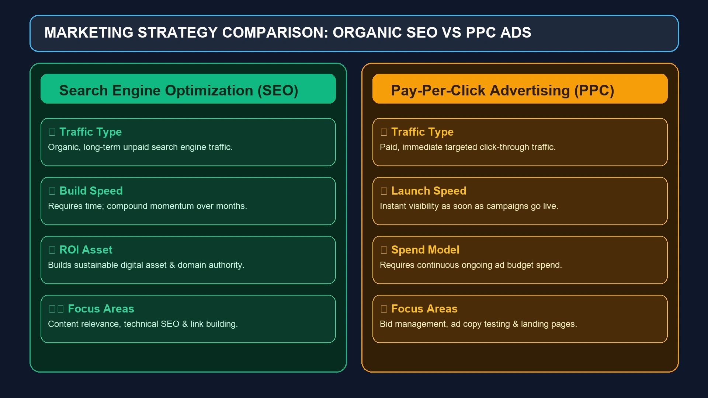
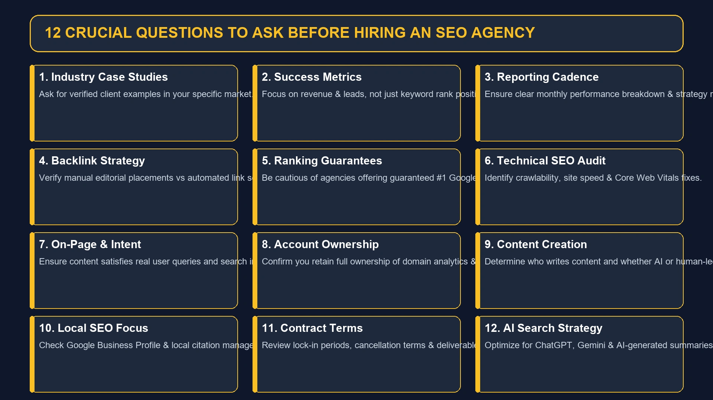

Glorvix Com: What It Is, Services, Features, and What You Should Know
If you have searched for Glorvix Com, you are probably trying to understand what the website actually is, what services it provides, and whether it is worth considering for digital marketing or SEO.

If you have searched for Glorvix Com, you are probably trying to understand what the website actually is, what services it provides, and whether it is worth considering for digital marketing or SEO.
Glorvix.com is associated with two closely connected areas: digital marketing services and technology-focused publishing. Its website presents content around SEO, digital marketing, web design, and technology, while its service positioning includes SEO, PPC, social media, web design, content marketing, and related online-growth services.
That combination makes Glorvix somewhat different from a website that only publishes articles or a traditional agency that only sells marketing services.
However, there is an important distinction between what a company says it offers and what can be independently verified. If you are considering Glorvix for your business, it makes sense to understand both sides before making a decision.
This guide takes a closer look at Glorvix Com, including what it is, its main services, how its SEO offering works, who it may suit, potential advantages and limitations, credibility considerations, and what to check before hiring a digital marketing provider.
What Is Glorvix Com?
Glorvix Com refers to Glorvix.com, an online platform associated with digital marketing, SEO, web design, and technology content.
The website describes itself as a destination for technology articles and blogs while also presenting digital marketing services for businesses. Its published material includes topics such as technical SEO, SEO strategy, digital marketing, and website optimization.
The service side of Glorvix focuses on helping businesses improve their online presence through areas such as:
- Search engine optimization
- Web design
- Digital marketing
- PPC advertising
- Social media marketing
- Content marketing
- Link building
- Website development
This creates a dual positioning:
Glorvix as a content publisher + Glorvix as a digital marketing service provider.
That model is increasingly common because agencies can use educational content to demonstrate their knowledge while attracting potential customers searching for marketing solutions.
Why Are People Searching for Glorvix Com?
The keyword Glorvix Com can represent several different types of search intent.
Someone searching for it may want to:
- Visit the official website
- Understand what Glorvix does
- Research its SEO services
- Find digital marketing services
- Learn about its web design offering
- Check whether Glorvix is legitimate
- Read reviews before contacting the company
- Find contact information
- Understand its technology articles
- Compare it with other digital marketing agencies
This means simply describing Glorvix as an "SEO agency" doesn't answer everything a searcher may want to know.
A better evaluation considers the company's services, positioning, website content, transparency, target customers, and available evidence.
What Services Does Glorvix Com Offer?
Glorvix's publicly described services cover several areas of digital marketing.

Search Engine Optimization
SEO is one of the most prominent services associated with Glorvix.
Search engine optimization involves improving a website so that search engines can better understand its pages and users can discover the business through relevant searches.
A comprehensive SEO campaign can involve:
- Keyword research
- Search-intent analysis
- On-page optimization
- Technical SEO
- Content optimization
- Internal linking
- Link building
- Local SEO
- Website audits
- SEO strategy
Glorvix's published SEO material discusses areas such as keyword research, on-page SEO, technical SEO, content strategy, link building, local SEO, and SEO migration support.
Technical SEO
Technical SEO focuses on the infrastructure behind a website.
It can involve:
- Crawlability
- Indexation
- Site architecture
- XML sitemaps
- Robots.txt
- Page speed
- Mobile usability
- Canonical URLs
- Structured data
- Redirects
- HTTPS
- Core Web Vitals
Glorvix has also published a dedicated beginner's guide explaining technical SEO and its role in helping search engines crawl, understand, and index websites.
For businesses with large websites or technical problems, this part of SEO can be particularly important.
On-Page SEO
On-page SEO focuses on elements that exist directly on individual webpages.
Typical activities include:
- Optimizing page titles
- Improving meta descriptions
- Structuring headings
- Aligning content with search intent
- Improving internal links
- Optimizing images
- Expanding thin content
- Improving topical coverage
- Adding useful FAQs where appropriate
The objective is not simply to place a keyword repeatedly on a page.
Modern SEO requires a page to answer the user's question clearly and provide enough context to demonstrate relevance.
Content Marketing
Content is closely connected to modern SEO.
A business may create:
- Blog posts
- Buying guides
- Service pages
- Industry pages
- Comparison articles
- Case studies
- FAQs
- Educational resources
A strong content strategy starts with the audience rather than simply generating pages around keywords.
For example, a software company might create content around:
Problem → Solution → Product category → Comparison → Purchase decision
This creates a more natural journey for potential customers.
PPC Advertising
Glorvix also associates its digital marketing services with paid advertising.
PPC, or pay-per-click advertising, allows businesses to pay for traffic through advertising platforms such as Google Ads and social advertising networks.
Unlike SEO, PPC can produce visibility relatively quickly after campaigns are launched.
However, paid advertising and SEO serve different purposes.

| SEO | PPC |
|---|---|
| Organic visibility | Paid visibility |
| Usually slower to build | Can generate traffic quickly |
| Long-term asset potential | Requires ongoing ad spend |
| Content and technical optimization | Campaign and bid management |
| Focuses on organic search | Focuses on paid placements |
For many businesses, using both can make sense.
Social Media Marketing
Social media is another component of a broader digital marketing strategy.
Depending on the business, social marketing can involve:
- Content creation
- Audience research
- Community management
- Paid social advertising
- Brand awareness
- Engagement campaigns
- Social content strategy
The appropriate platform depends heavily on the target audience.
A B2B software company may prioritize LinkedIn, while a fashion brand may focus more heavily on Instagram, TikTok, or other visual platforms.
Web Design and Development
SEO cannot compensate indefinitely for a poor website experience.
A business can rank well and still lose customers if its website:
- Loads slowly
- Looks outdated
- Is difficult to navigate
- Is confusing on mobile
- Has unclear calls to action
- Makes it difficult to contact the company
This is why web design and SEO often work well together.
A well-designed website can support:
- Better navigation
- Stronger branding
- Higher conversion potential
- Improved mobile usability
- Clearer content organization
Glorvix's public positioning includes web design alongside SEO and digital marketing services.
Link Building
Backlinks remain an important part of SEO because links can help search engines discover content and understand relationships between websites.
But not all backlinks have the same value.
A useful link-building strategy should focus on:
- Relevance
- Editorial context
- Quality websites
- Natural placement
- Useful content
- Sustainable acquisition
Businesses should be cautious about providers promising hundreds or thousands of backlinks at unusually low prices.
More links do not automatically mean better rankings.
Local SEO
Local SEO is particularly important for businesses serving specific geographic areas.
It can involve:
- Google Business Profile optimization
- Local landing pages
- Local citations
- Reviews
- Location-based content
- NAP consistency
- Local keyword research
- Local link building
For example, a plumbing company in Chicago needs visibility for searches such as:
"plumber near me"
or
"emergency plumber Chicago."
Local SEO helps connect the business with people searching for services in its service area.
How Does Glorvix Com Approach SEO?
Based on its published material, Glorvix describes SEO as a combination of several activities rather than one isolated tactic.
A complete SEO strategy can be thought of as:
Technical foundation → Search intent → Content → On-page optimization → Authority → Measurement
Each part supports the next.
For example, creating excellent content won't help as much if Google cannot properly crawl or index the website.
Likewise, fixing technical issues alone won't generate meaningful organic traffic if the website doesn't have useful content targeting relevant searches.
Glorvix Com and AI Search
Search is changing rapidly.
Users increasingly receive answers through AI-powered interfaces in addition to traditional search results.
That means businesses now need to think about more than simply ranking for a keyword.
Content should also be:
- Clear
- Factually supported
- Well structured
- Easy to understand
- Semantically complete
- Written around real questions
- Supported by credible sources
Glorvix's more recent marketing material discusses visibility in AI-driven search environments and platforms such as ChatGPT and Gemini.
This is an important development because the future of search is likely to involve a combination of traditional organic results, AI-generated answers, structured information, and conversational discovery.
What Makes an Effective AI-Search Strategy?
There is no magic formula that guarantees an AI system will mention a particular company.
However, businesses can improve the usefulness and clarity of their content by focusing on fundamentals.
Answer Specific Questions
Instead of writing vague content about "digital marketing," answer specific questions users actually ask.
Build Topic Depth
Cover related concepts instead of publishing one shallow page for every keyword variation.
Demonstrate Expertise
Use knowledgeable authors, accurate information, examples, and first-hand experience where appropriate.
Cite Reliable Sources
Supporting important claims with trustworthy references makes content easier to evaluate.
Keep Information Current
Outdated information is particularly problematic in fast-changing industries.
Is Glorvix Com Legitimate?
This is one of the most important questions people ask when researching the brand.
The available evidence shows that Glorvix.com is an active website with published service information and a substantial collection of technology and marketing-related content. Its own website includes pages covering SEO, digital marketing, technical SEO, and related subjects.
However, there is a difference between confirming that a website exists and independently confirming the results of its services.
A third-party review published in 2026 notes that Glorvix has an online presence and publicly described services but also points out that independently verifiable client results and company documentation are limited.
That means prospective customers should perform normal vendor due diligence.
In other words:
The website is real and presents identifiable services, but you should evaluate the actual business relationship using evidence rather than relying solely on promotional claims.
How to Evaluate Glorvix Before Hiring
If you are considering Glorvix for your business, ask practical questions before signing a contract.

Ask for Relevant Case Studies
Don't just ask whether they have case studies.
Ask for examples relevant to:
- Your industry
- Your business size
- Your target market
- Your SEO difficulty
- Your desired outcome
Ask How Success Is Measured
A good agency should be able to explain which metrics matter.
Depending on the campaign, these could include:
- Organic traffic
- Qualified leads
- Conversion rate
- Revenue
- Keyword visibility
- Local search visibility
- Cost per acquisition
Ranking position alone isn't always enough.
Understand the Reporting Process
Ask:
- How often will reports arrive?
- What will they contain?
- Who will explain the results?
- How are strategy changes communicated?
Transparent reporting makes an agency relationship much easier to manage.
Ask About Link Building
If link building is included, understand:
- What websites will be targeted?
- How are websites evaluated?
- Are links editorial?
- Are paid placements involved?
- Will you receive a link report?
- What happens if a link disappears?
The answers can tell you a lot about the quality of the strategy.
Does Glorvix Guarantee Google Rankings?
Be cautious with any agency that promises a guaranteed first-place Google ranking.
SEO involves factors outside an agency's complete control, including:
- Search engine algorithm changes
- Competitor activity
- Search demand
- Website history
- Industry competitiveness
- Technical limitations
- Content quality
- User behavior
A responsible SEO provider should focus on improving the probability of sustainable organic growth, not guaranteeing an exact Google position.
What Are the Advantages of Glorvix Com?
Broad Digital Services
One potential advantage is the ability to address multiple areas of digital marketing through one provider.
SEO and Content Connection
Because Glorvix also publishes technology and marketing content, its service model is closely connected to content production and SEO.
Technical SEO Focus
The presence of dedicated technical SEO material suggests that technical optimization is part of its broader SEO positioning.
Multiple Marketing Channels
SEO, PPC, social media, content, and web design can be combined when a business needs a broader growth strategy.
Educational Resources
The website publishes articles that explain SEO and digital marketing concepts, which can be useful for businesses trying to understand the services they are purchasing.
What Are the Potential Limitations?
A balanced review should also consider the other side.
Limited Independent Performance Evidence
Publicly available independent evidence of client outcomes appears less extensive than the amount of promotional and educational content available.
That doesn't prove poor performance.
It simply means prospective customers should ask for verifiable examples.
Broad Service Offering
An agency offering many services needs to demonstrate competence across each area.
Don't assume that expertise in SEO automatically means equal expertise in PPC, web development, social media, and every other service.
Trust Signals Should Be Verified
One earlier third-party assessment raised concerns about the site's external trust indicators. Such automated scores are useful as signals to investigate, but they are not by themselves proof that a business is fraudulent or trustworthy.
Results Depend on the Client
Even a strong marketing agency cannot guarantee results if the underlying business has:
- Weak products
- Poor pricing
- Bad reviews
- Limited demand
- Slow sales processes
- Poor website conversion rates
Marketing is only one part of business growth.
Who Could Consider Glorvix Com?
Glorvix may be worth investigating for businesses that need several digital marketing functions rather than a single isolated service.
Potential customers could include:
Small Businesses
Local companies may need SEO, web design, local visibility, and digital advertising.
Startups
Startups often need to establish online visibility quickly while building long-term organic traffic.
E-commerce Businesses
Online stores may benefit from technical SEO, category optimization, content, paid advertising, and conversion improvements.
Service Businesses
Professional services, home services, agencies, and local companies can use SEO and PPC to reach people actively searching for their services.
Businesses Entering New Markets
Companies expanding into new geographic areas may require localized content and SEO strategies.
Who May Want a Different Option?
Glorvix may not be the perfect fit for every business.
You might prefer another provider if:
- You need a highly specialized agency
- You require enterprise-level SEO infrastructure
- You need a dedicated in-house marketing team
- You want a provider focused exclusively on PPC
- You need a highly specialized e-commerce SEO agency
- You already have an experienced internal SEO team
The right choice depends on the problem you are trying to solve.
Glorvix Com vs. Hiring Separate Specialists
Businesses generally have three choices.
| Approach | Advantages | Potential Drawback |
|---|---|---|
| Full-service agency | Multiple services under one roof | Less specialized in some areas |
| Specialist agency | Deep expertise | Multiple vendors may be needed |
| In-house team | Maximum internal control | Higher hiring and management overhead |
There isn't one universally correct answer.
A small business with limited internal marketing resources may prefer an agency.
A large company with substantial revenue may prefer internal specialists supported by outside consultants.
How Much Should You Expect to Pay?
Pricing for SEO and digital marketing varies substantially.
It depends on:
- Business size
- Industry
- Geographic market
- Competition
- Number of pages
- Website condition
- Content requirements
- Link-building requirements
- Advertising budget
- Reporting requirements
Avoid selecting an agency based purely on the lowest monthly price.
A cheap campaign that generates no qualified traffic can ultimately be more expensive than a higher-priced campaign that produces measurable business results.
Before agreeing to a package, ask for a clear breakdown of what you are actually receiving.
What Should You Ask During a Glorvix Consultation?
A useful consultation should give you specific answers.
Consider asking:
- What is the biggest SEO issue on my website?
- Which keywords represent realistic opportunities?
- What competitors are you comparing us against?
- What will you change during the first 90 days?
- How will you measure success?
- What type of content will you create?
- How will backlinks be acquired?
- Who owns the content?
- Who owns the analytics and advertising accounts?
- Can you provide relevant client examples?
- How often will we receive reports?
- What happens if we cancel the service?
These questions can reveal whether an agency has a genuine strategy or is simply selling a generic package.
Glorvix Com and Google E-E-A-T
Google's search ecosystem places significant emphasis on helpful, trustworthy content.
The broader concept commonly discussed by SEO professionals is E-E-A-T:
- Experience
- Expertise
- Authoritativeness
- Trustworthiness
For a digital marketing company, these principles matter in two directions.
First, the agency should demonstrate its own expertise.
Second, the websites it optimizes should demonstrate expertise appropriate to their industries.
For example, a medical website needs a different level of expertise and evidence than a casual entertainment blog.
This is why good SEO cannot simply be reduced to keyword density.
Why Entity-Based SEO Matters for Glorvix Com
Modern search engines don't only look for individual keywords.
They also try to understand entities and relationships.
For Glorvix, relevant entities can include concepts such as:
Glorvix → SEO → Search engine optimization → Digital marketing → Web design → PPC → Content marketing → Link building → Local SEO → Technology publishing
Building content around related concepts helps search engines understand topical context.
For businesses, this means an effective SEO strategy should create a coherent information ecosystem rather than dozens of disconnected keyword pages.
Is Glorvix Com a Technology Website or Marketing Agency?
It is effectively both in terms of its public positioning.
The website presents itself as a destination for technology articles and blogs, while also offering digital marketing services.
This can be understood as a content-plus-services model.
The content side can educate potential customers.
The service side can turn that interest into business relationships.
That model isn't unusual, but it does mean readers should distinguish between editorial information and promotional material when evaluating individual pages.
Glorvix Com and Website Content
Content plays an important role in the site's overall identity.
Its published material includes subjects such as:
- Technical SEO
- SEO strategy
- Digital marketing
- Website optimization
- Technology
- Search visibility
For someone learning SEO, this can provide useful introductory material.
For advanced professionals, however, the best approach is to compare recommendations against current search-engine documentation, industry research, experiments, and first-hand experience.
Is Glorvix Com Safe to Visit?
Website safety and business credibility are two different questions.
A visitor should always follow basic online-security practices:
- Confirm the domain spelling before entering information.
- Use HTTPS.
- Avoid downloading unexpected files.
- Don't share unnecessary personal information.
- Don't reuse passwords.
- Be cautious about unexpected payment requests.
- Review privacy and terms pages before providing sensitive information.
Glorvix's website also publishes a disclaimer explaining that its content is intended for general informational purposes and should not be treated as professional legal, accounting, tax, or similar advice.
That is worth remembering when reading any business or financial-related content online.
What Is the Glorvix Com Official Site?
The domain glorvix.com is the website associated with the Glorvix brand.
If you are searching for the company, make sure you are using the correct domain because similar-looking names can easily lead to confusion.
This is particularly important when searching for:
- Glorvix Com contact
- Glorvix Com services
- Glorvix Com SEO
- Glorvix Com reviews
- Glorvix Com official site
Always verify the domain before submitting personal information or contacting a business.
Frequently Asked Questions About Glorvix Com
Glorvix Com refers to Glorvix.com, a website associated with digital marketing services and technology-focused content. Its services include areas such as SEO, web design, PPC, social media, content marketing, and related online-growth solutions.
SEO is one of the primary services associated with Glorvix. Its published material discusses keyword research, technical SEO, on-page optimization, content, link building, local SEO, and broader search strategies.
Glorvix's public service positioning includes SEO, technical SEO, web design, digital marketing, PPC advertising, social media marketing, content marketing, link building, and related services.
Glorvix.com is an active website with published services and extensive marketing and technology content. However, prospective customers should independently verify client results, references, contracts, pricing, and deliverables before hiring the company.
Yes. Web design is among the services associated with Glorvix's broader digital marketing offering.
Yes. PPC advertising is included among the digital marketing services associated with the platform.
Local SEO is included in the SEO strategies described by Glorvix, including efforts aimed at improving visibility for location-based searches.
Businesses should be cautious about any agency promising guaranteed rankings. Search-engine rankings depend on many factors outside an agency's direct control.
SEO results vary significantly depending on competition, website history, technical condition, content quality, authority, and market demand. Meaningful organic growth generally requires sustained work rather than a few days of optimization.
It may be worth considering for small businesses that need several digital marketing services, particularly SEO, web design, content, and paid advertising. The best fit depends on the company's specific goals and budget.
Yes. Glorvix's website describes itself as a destination for technology articles and blogs and publishes material related to technology, SEO, and digital marketing.
Review relevant case studies, client references, pricing, contract terms, reporting processes, expected deliverables, backlink methods, ownership of accounts and content, and the specific strategy proposed for your business.
Final Verdict on Glorvix Com
Glorvix Com is best understood as a digital marketing and technology-content platform with services spanning SEO, web design, PPC, content, social media, link building, and broader digital marketing.
Its biggest strength is the breadth of its offering. A business looking for several connected marketing services may find value in working with one provider rather than coordinating multiple specialists.
Its content publishing side is also relevant because the website regularly discusses subjects connected to SEO, technology, and digital marketing.
At the same time, a smart buyer should separate marketing claims from independently verifiable results.
The existence of a professional-looking website does not automatically prove that an agency is the right choice for your business. Before committing money, ask for relevant case studies, understand exactly what will be delivered, review reporting practices, and make sure you know how success will be measured.
In short, Glorvix Com is worth researching if you are looking for SEO, web design, or broader digital marketing support, but the final decision should be based on your specific goals, the proposed strategy, verified evidence, and the terms of the engagement.
That balanced approach is far more useful than simply calling an agency "the best" or dismissing it without examining the available evidence.
Enjoyed this Technology guide?
Explore more Tech articles or submit your own guest contribution on CracksTube.